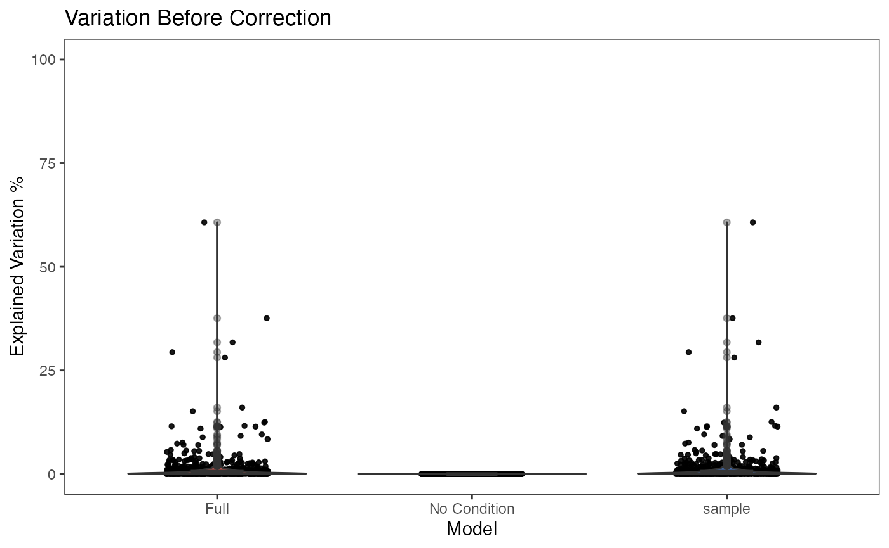
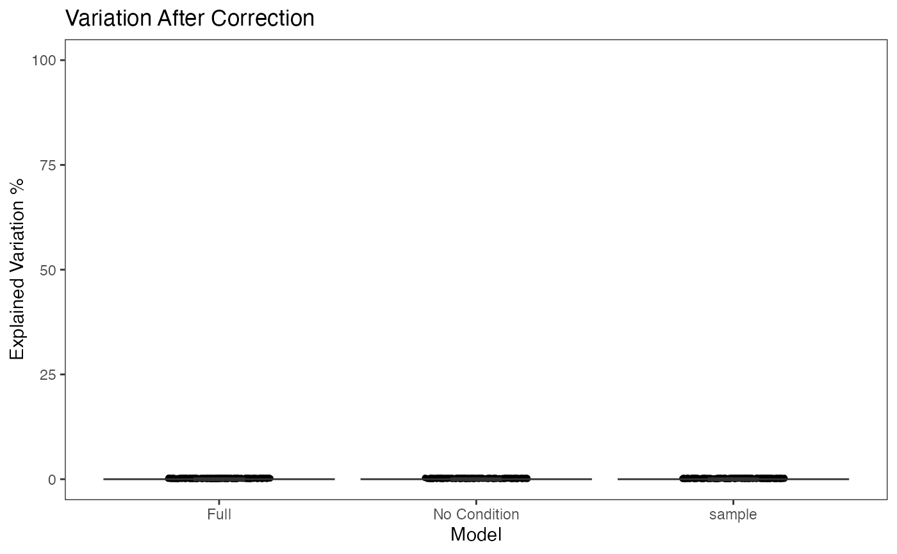
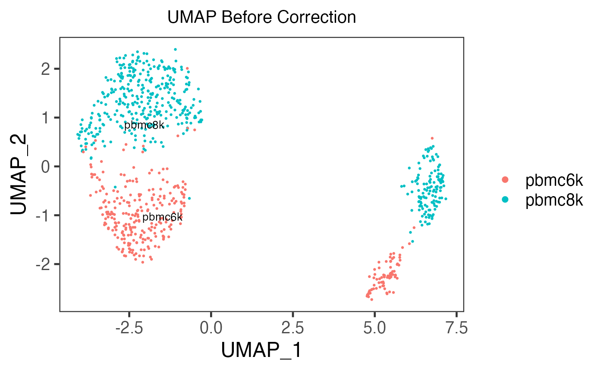
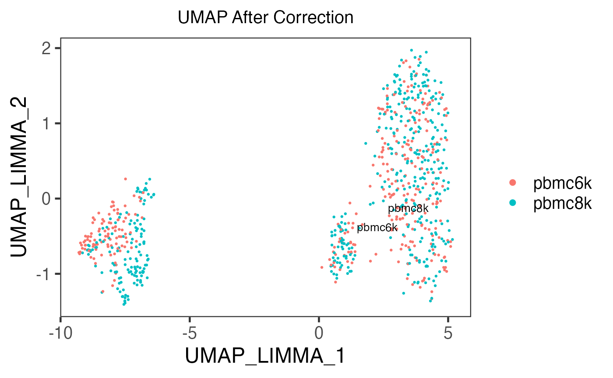

Batch Correction on SingleCellExperiment Object
Yichen Wang
Source:vignettes/batch_correction.Rmd
batch_correction.RmdIntroduction
For this section, we wrapped 12 methods into functions that perform batch effect correction on an SingleCellExperiment (SCE) object and return the input SCE object with a corrected matrix updated in-place.
Here is a table for the method names, citations, corresponding wrapper functions and where the results are updated:
| Method | Citation | Function | Result Slots |
|---|---|---|---|
| BBKNN | Polański, Krzysztof and et al., 2019 | runBBKNN() |
reducedDim
|
| ComBat | Yuqing Zhang and et al., 2018 | runComBat() |
assay
|
| FastMNN | Aaron Lun, 2018 | runFastMNN() |
reducedDim
|
| MNN | Laleh Haghverdi, 2018 | runMNNCorrect() |
assay
|
| Harmony | Ilya Korsunsky and et al., 2019 | runHarmony() |
reducedDim
|
| LIGER | Joshua Welch, et al., 2018 | runLIGER() |
reducedDim
|
| Limma | Gordon K Smyth, et al., 2003 | runLimmaBC() |
assay
|
| Scanorama | Brian Hie et al, 2019 | runSCANORAMA() |
assay
|
| scGen | Mohammad Lotfollah et al., 2019 | runSCGEN() |
assay
|
| scMerge | Yingxin Lin et al., 2019 | runSCMerge() |
assay
|
| Seurat Integration | Tim Stuart et al., 2019 | runSeurat3Integration() |
altExp
|
| ZINBWaVE | Davide Risso et al., 2018 | runZINBWaVE() |
reducedDim
|
For a result returned in reducedDim, it means that some sorts of dimension reduction method, such as PCA and UMAP, is performed during the correction. For a result returned in assay, all of the original features (i.e. genes) remain the same, thus it is a full-sized assay. For a result returned in altExp, it means that the values in the corrected assay still stand for the expression level of the original features, instead of any low-dimension embedding, but the number of these features are less than original due to potential subsetting steps in the calculation.
Specifications
- The pipeline is currently written in the R language. Users will need to install R version 3.6.2 (or higher) in order to run all of the required packages.
- For using method “BBKNN”, “Scanorama” and “scGen”, the corresponding Python3 modules has to be installed
Installation
The script will automatically try to install the “singleCellTK” package from Bioconductor if not available. However, currently this code is only located on a development branch which needs to be installed from GitHub:
library(devtools) install_github("compbiomed/singleCellTK@devel")
Running the pipeline
To run the pipeline, the most basic requirements are:
- An assay of expression value, usually pre-processed.
- The annotation of the batches.
As we adopt SingleCellExperiment (sce) object through out the whole SCTK for a collection of all matrices and metadatas of the dataset of interests, the assay to be corrected, called "assayToCorr", has to be saved at assay(sce, "assayToCorr"). Meanwhile, the batch annotation information has to be saved in a column of colData(sce).
Note that the batch annotation should better be saved as a
factorin thecolData, especially when the batches are represented by integer numbers, because some downstream analysis are likely to parse the non-character and non-logical information as continuous values instead of categorical values.
Command line example
Prepare an SCE object with multiple batches
Here we present an example dataset that is combined from “pbmc3k” and “pbmc4k” (Kasper D. Hansen et al., 2017), which you can import by a function called importExampleData().
library(singleCellTK) pbmc6k <- importExampleData('pbmc6k') pbmc8k <- importExampleData('pbmc8k') print(paste(dim(pbmc6k), c('genes', 'cells'))) print(paste(dim(pbmc8k), c('genes', 'cells')))
## [1] "32738 genes" "5419 cells"
## [1] "33694 genes" "8381 cells"There is a function called combineSCE(), which accepts a list of SCE objects as input and returns a combined SCE object. This function requires that the number of genes in each SCE object has to be the same, and the gene metadata (i.e. rowData) has to match with each other if the same fields exist. Therefore, we need some pre-process for the combination. Users do not necessarily have to follow the same way, depending on how the raw datasets are provided.
## The strategy here is to only use the genes presented in both datasets. ## Get the intersection of both gene lists. isecGene <- intersect(rownames(pbmc6k), rownames(pbmc8k)) ## Subset each dataset by the intersection. pbmc6k.isec <- pbmc6k[isecGene,] pbmc8k.isec <- pbmc8k[isecGene,] ## Overwrite the mismatches in rowData, a special case in this example. rowData(pbmc8k.isec) <- rowData(pbmc6k.isec) ## Apply combination function sce.combine <- combineSCE(list(pbmc6k = pbmc6k.isec, pbmc8k = pbmc8k.isec)) ## Simply filter out the genes that are expressed in less than 1% of all cells. sce.filter <- sce.combine[rowSums(assay(sce.combine) > 0) >= 0.01 * ncol(sce.combine),] sce.filter
## class: SingleCellExperiment
## dim: 10020 13800
## metadata(0):
## assays(1): counts
## rownames(10020): AP006222.2 RP11-206L10.9 ... MT-CYB AL592183.1
## rowData names(3): ENSEMBL_ID Symbol_TENx Symbol
## colnames(13800): pbmc6k_AAACATACAACCAC-1 pbmc6k_AAACATACACCAGT-1 ...
## pbmc8k_TTTGTCATCTCGAGTA-1 pbmc8k_TTTGTCATCTGCTTGC-1
## colData names(12): Sample Barcode ... Date_published sample
## reducedDimNames(0):
## spikeNames(0):
## altExpNames(0):The batch annotation now is stored at colData(sce.filter)$sample. The summary can be checked by running:
table(colData(sce.filter)$sample)
##
## pbmc6k pbmc8k
## 5419 8381Before trying out any batch correction function, we recommend to use a small subset of example so the effect can be quickly examined. Additionally, most of the batch correction methods provided require a log-normalized assay as input, so we have to make sure of this.
sce.small <- sce.filter[sample(nrow(sce.filter), 800), sample(ncol(sce.filter), 800)] sce.small <- scater_logNormCounts(inSCE = sce.small, useAssay = 'counts', logAssayName = 'logcounts') sce.small
## class: SingleCellExperiment
## dim: 800 800
## metadata(0):
## assays(2): counts logcounts
## rownames(800): RNF130 CERS4 ... ILF3 HEXB
## rowData names(3): ENSEMBL_ID Symbol_TENx Symbol
## colnames(800): pbmc8k_CGGACACCAAATTGCC-1 pbmc6k_CACTTTGACAGGAG-1 ...
## pbmc8k_GCTTGAAGTCTTGTCC-1 pbmc6k_ATGATATGGACTAC-1
## colData names(12): Sample Barcode ... Date_published sample
## reducedDimNames(0):
## spikeNames(0):
## altExpNames(0):Run a batch correction method on the prepared SCE object
The basic way to run a batch correction method from SingleCellTK is to select a function for the corresponding method, input the SCE object, specify the assay to correct, and the batch annotation.
For example, here we will try the batch correction method provided by Limma, which fits a linear model to the data.
sce.small <- runLimmaBC(inSCE = sce.small, useAssay = 'logcounts', batch = 'sample', assayName = 'LIMMA') sce.small
## class: SingleCellExperiment
## dim: 800 800
## metadata(0):
## assays(3): counts logcounts LIMMA
## rownames(800): RNF130 CERS4 ... ILF3 HEXB
## rowData names(3): ENSEMBL_ID Symbol_TENx Symbol
## colnames(800): pbmc8k_CGGACACCAAATTGCC-1 pbmc6k_CACTTTGACAGGAG-1 ...
## pbmc8k_GCTTGAAGTCTTGTCC-1 pbmc6k_ATGATATGGACTAC-1
## colData names(12): Sample Barcode ... Date_published sample
## reducedDimNames(0):
## spikeNames(0):
## altExpNames(0):Visualization
In this documentation, we provide three ways to examine the removal of batch effect, in terms of visualization.
- Plot the variation explained by the batch annotation and another condition.
This functionality is implemented in plotBatchVariance(). It plots a violin plot of the variation explained by the given batch annotation, an additional condition, and the variation explained by combining these two conditions.
This plot would be useful for examining whether the existing batch effect is different than another condition (e.g. subtype) or is confounded by that. However, the additional condition labels (e.g. cell types) do not necessarily exist when batch effect removal is wanted, so only plotting the variation explained by batches is also supported.
plotBatchVariance(inSCE = sce.small, useAssay = 'logcounts', batch = 'sample', title = 'Variation Before Correction')

plotBatchVariance(inSCE = sce.small, useAssay = 'LIMMA', batch = 'sample', title = 'Variation After Correction')

- Plot the mean expression level of each gene separately for each batch.
This functionality is implemented in plotSCEBatchFeatureMean(). The methodology is straight forward, which plots violin plots for all the batches, and within each batch, the plot illustrates the distribution of the mean expression level of each gene. Thus the batch effect can be observed from the mean and standard deviation of each batch.
- Plot a dimension reduced components to see the grouping of cells
There is no function special for batch correction, but this can be achieved simply by using the dimension reduction calculation functions (e.g. getPCA(), getUMAP() and getTSNE()) and plotSCEDimReduceColData().
sce.small <- getPCA(inSCE = sce.small, useAssay = 'logcounts', reducedDimName = 'PCA') plotSCEDimReduceColData(inSCE = sce.small, colorBy = 'sample', reducedDimName = 'PCA', title = 'PCA Before Correction')

sce.small <- getPCA(inSCE = sce.small, useAssay = 'LIMMA', reducedDimName = 'PCA_LIMMA') plotSCEDimReduceColData(inSCE = sce.small, colorBy = 'sample', reducedDimName = 'PCA_LIMMA', title = 'PCA After Correction')

UI usage
The batch correction functionality is implemented under the tab “Normalization & Batch Correction”, as shown in figure below, which is a sidebar layout.
The correction is done with the settings in the sidebar on the left side. Users have to choose the assay to correct, the annotation for the batches, and the method to invoke. Below the method selection, users will be given alternative parameters specific to the method selected. The last text input is always for the name of the result, and its label indicates whether the result is updated as reducedDim, assay, or altExp. Duplicated names will automatically be overwritten without warning. After confirming all parameters, press “Run” to run the correction.
The visualization check is implemented in the main panel on the right, with four plotting region and a list of settings. The plots are done in the exactly same way as Method 2 and 3 described above. After choosing the original assay used, batch annotation used, and the name of the result to check, press “Plot” to update the visualization.